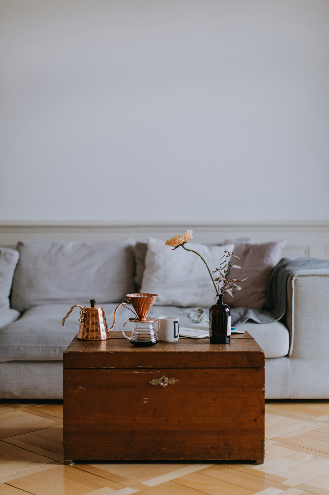
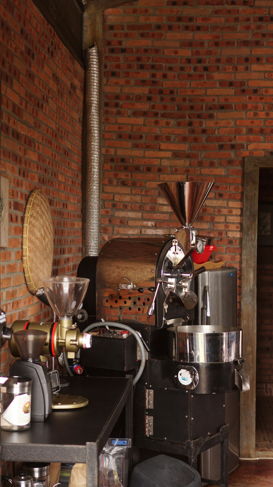

Learn With Us
The world is so much better when we share.
That is why, right from inception, we’ve been on a mission to turn you
into a professional grade barista.
Experts conduct workshops where we share our knowledge and insights
with you on a regular basis.
Check out our ongoing workshops and join us today.

The Home Barista
Can’t travel to our workshop?
Learn from the comfort of your home by joining our innovative Home Barista workshops.
When you sign up, you get your own coffee appreciation kit which you’ll use along with the workshop.
Learn from the comfort of your home by joining our innovative Home Barista workshops.
When you sign up, you get your own coffee appreciation kit which you’ll use along with the workshop.
Duration: 4 Hours
$250

The Champion Series
Conducted once every year, our Champion series is a serious coffee
aficionado’s dream come true.
Enthusiasts from across the country gather at our Seattle facility for 3 days of intense brewing to get ready for the Bean King Champion contest held at Montreal every year.
This is not to be missed. And we’ve got the awards to prove it.
Enthusiasts from across the country gather at our Seattle facility for 3 days of intense brewing to get ready for the Bean King Champion contest held at Montreal every year.
This is not to be missed. And we’ve got the awards to prove it.
Duration: 3 days on-site
$2000